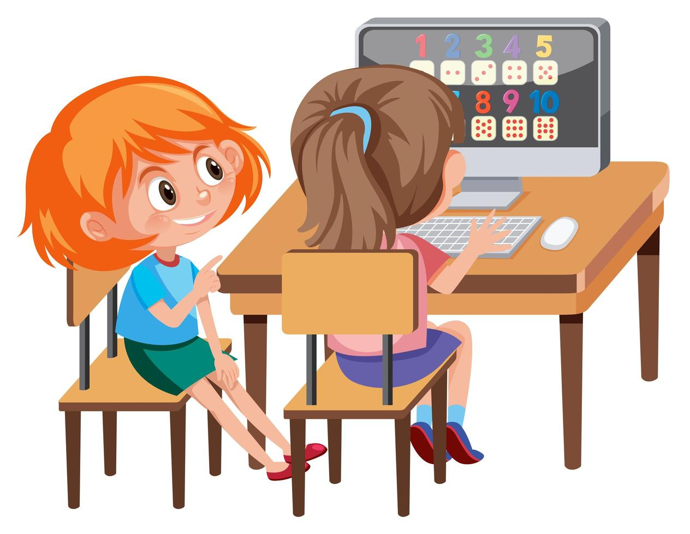

¡Estos son nuestros Servicios!
Servicio 1

Desarrollo de la creatividad: La programación brinda a los niños una plataforma para expresar su creatividad de manera única. Desde la creación de juegos interactivos hasta el diseño de historias digitales, aprender a programar les permite dar vida a sus ideas de manera tangible.
Mejora del pensamiento lógico: La lógica es una habilidad crucial en todos los aspectos de la vida. La programación enseña a los niños a pensar de manera estructurada y a abordar problemas de manera analítica, habilidades que se traducen en beneficios significativos en la resolución de problemas cotidianos.
Los prepara para el futuro: Vivimos en un mundo cada vez más digitalizado. El conocimiento de programación no solo es valioso en campos tecnológicos, sino que también se ha vuelto esencial en diversas industrias. Brindar a los niños estas habilidades desde temprana edad les otorga una ventaja en un futuro competitivo.
Servicio 2
Fomenta la paciencia y la persistencia: La programación a menudo implica probar, fallar y corregir. Este proceso enseña a los niños la importancia de la paciencia y la persistencia, habilidades cruciales para el aprendizaje y el éxito en cualquier disciplina.
¿Cómo puede tu hijo dar sus primeros pasos en el emocionante mundo de la programación? Nuestro curso de verano «Programación Creativa con Scratch y Makey Makey» ofrece una experiencia educativa única. Los participantes no solo aprenderán a programar en Scratch, sino también a crear proyectos interactivos utilizando material reciclado para interactuar con el computador.
Servicio 3
Fomenta la paciencia y la persistencia: La programación a menudo implica probar, fallar y corregir. Este proceso enseña a los niños la importancia de la paciencia y la persistencia, habilidades cruciales para el aprendizaje y el éxito en cualquier disciplina.
¿Cómo puede tu hijo dar sus primeros pasos en el emocionante mundo de la programación? Nuestro curso de verano «Programación Creativa con Scratch y Makey Makey» ofrece una experiencia educativa única. Los participantes no solo aprenderán a programar en Scratch, sino también a crear proyectos interactivos utilizando material reciclado para interactuar con el computador.
Servicio 4
Estas son algunas de las razones que evidencian la importancia de que nuestros hijos aprendan a programar. 1 Ayuda a entender el funcionamiento de los dispositivos que usamos a diario. Los ordenadores funcionan de una manera determinada, siguiendo unos procesos. Aprender a programar ayuda a entender cómo funcionan los dispositivos y los programas que usamos en el día a día. Descubriendo cómo funciona la tecnología se pueden comprender mejor todas sus posibilidades.“Todo el mundo en este país debería aprender a programar, porque te enseña a pensar” Steve Jobs 2 Aprenden a pensar. Aprendiendo a programar los niños adquieren conocimientos de vital importancia en la actualidad y de mayor relevancia aún en el futuro. Dotarles de conocimientos de programación es enseñarles a pensar de un modo, que les permitirá resolver todo tipo de problemas en casi cualquier disciplina. Aprendiendo a programar, los niños desarrollan el pensamiento lógico, enfrentándose a bloqueos y frustraciones diariamente, hacer esto en edades tempranas, permite sobreponerse a estas frustraciones con un esfuerzo menor, lo que les será muy útil en el futuro. 3 Fomenta el pensamiento crítico y la habilidad para resolver problemas. Algo que pueden utilizarse no sólo en la clase de matemáticas. Para programar es necesario desarrollar el pensamiento computacional, una especie de pensamiento lógico que estructura la mente y ordena las ideas. Te permite dividir un problema grande en problemas más pequeños. 4 Desarrolla la creatividad. Al programar se crea algo de la nada. Aprender a programar te permite tener una idea y desarrollarla. La programación permite desarrollar la imaginación para innovar y ver su aplicación en muchas disciplinas diferentes, desde la ingeniería, hasta la medicina o la música. “Programar es lo más parecido a tener súperpoderes” Code.org